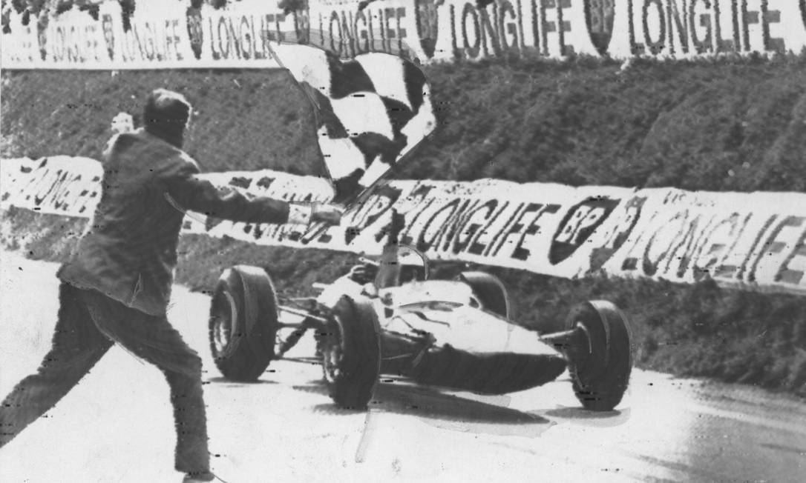

Foto tirada por: Autor Desconhecido
Preparamos um video onde é mostrado os momentos mais emocionantes da fórmula 1, reviva alguns desses momentos que ficaram marcados na história e na memória dos amantes do automobilismo e da fórmula 1:
Separamos também um áudio de um dos momentos mais emocionantes e marcantes para os atuais amantes de fórmula 1, onde nada mais nada menos que o atual campeão daquele ano brigava com o garoto que hoje viraria um dos nomes mais marcantes no automobilismo por um todo, (recomendamos a utilização de fones de ouvidos para uma melhor experiência). Confira: